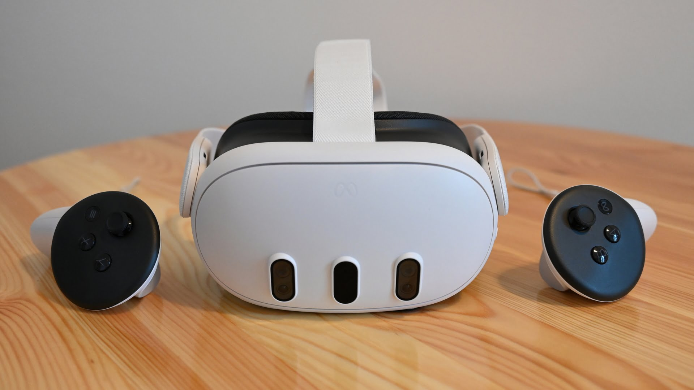

Quest 3 Review
The Quest 3 is a pretty substantial upgrade over the Quest 2. Not just because it has more processing power, or that it has color passthrough cameras. One of the biggest upgrades of this generation is the application of pancake lenses.

The Quest 2 and the majority of the other headsets of its generation (ex. Steam Index) used fresnel lenses. These lenses scatter light, which created god rays, glare, and chromatic aberration around high-contrast objects. Their sweet spot is much smaller, your vision would only be sharp looking at the center of the screen.
Pancake lenses offer a much larger sweet spot, so you can look around the screen without sacrificing clarity. They offer edge to edge sharpness across your entire field of view.
Pancake lenses require brighter screens, since they bounce light multiple times through internal reflective and polarizing layers. They aren't as light efficient as fresnel lenses are. They are also more expensive to manufacture.
The Quest 3 retails at $599.99 USD (as of 10/16/2026). Meta sells a budget friendly model as well, the Meta Quest 3S starting at $299.99 for the 128 GB model The Quest 2 launched in 2020 at the same starting price of $299.
Would I recommend this headset? Absolutely.